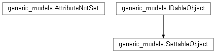

generic_models¶

API¶
- exception generic_models.AttributeNotSet¶
Bases: exceptions.Exception
Raised when an object tries to use an object whose an attribute essential to its working has not yet been set. E.g. when you try sending a message with a modem whose COM port has not been set.
- class generic_models.IDableObject¶
Bases: object
Class of an object which is accessible through a unique ID. The ID is obtained according various processes wich depend on the class of the object. Though, in all cases, they are given so that they are unique.
- get_id()¶
- class generic_models.SettableObject(settings=None, *args, **kwargs)¶
Bases: generic_models.IDableObject
Class used to normalize the access to an object’s settings.
Within Majordom, many objects may need to be set by the user: protocols, devices or even blocks. But all the blocks or all the devices will not have the same settings: for instance, you can specify the value of a ‘Constant Block’ but a ‘Multiply’ Block will have no settings. Different devices, from different protocols, won’t have the same settings either.
Yet, all these objects have to be settable. To do so, we introduced two attributes: settings_format and settings.
The first one, settings_format, is a representation of the available settings of the given object. It can be a class attribute: every instance of a class should normally have the same settings format. The settings_format are a python list of python dictionaries.
Here is an example of format dictionary:
{'key': 'name', 'type': 'string', 'disabled': False, 'name': 'Name of the device', 'desc': 'The display name of this device'}
- the ‘key’ is a unique identifier for this particular settings
- the ‘type’ can be ‘string’, ‘string_long’, ‘num’, ‘num_int’, ‘bool’ or ‘options’. In the case of ‘options’, you have to add another ‘options’ field which will contain the list of all available options
- the ‘disabled’ field tells whether or not the user can modify the settings (it is optional and defaults to True)
- the ‘name’ field is the name of the given settings
- the ‘desc’ field is a field describing what the setting is used for
The second one, settings, is a python dictionary containing the settings themselves. The key in the dictionary is the corresponding key in the settings format.
These two attributes are in fact a way to replace some instance attributes: the elements in settings would normally have been stored in the instance attributes. It is the need to be able to dynamically ‘discover’ one object’s available settings which led us to this choice: this way, having exact knowledge of the class structures (in particular of its attributes) is not necessary to interact with it.
- settings_format = []¶
The settings_format dictionary described above.
- set(settings)¶
Sets the SettableObject according to the settings given as argument. The setting dict given as argument must follow the format of the class attribute settings_format.
If the settings given are not valid, they are ignored and the method returns a dictionary containing the faulty keys. For instance, settings may not be valid if you try giving a dictionary having a key which was not specified in settings_format or if the value of a setting does not tally with the type requested in settings_format.
The settings dictionary given as argument may not contain every key specified in the format dictionary. In this case, all the specified settings will me modified (on the condition they are valid) and the others will be left unchanged.
Parameters: settings (python dict) – The python dictionary containing the settings to apply. Returns: True if the settings were correctly applied. A python dictionary containing the faulty settings otherwise. Return type: boolean or python dict